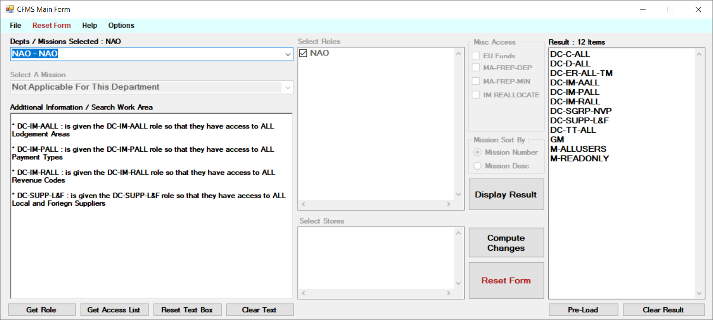

I am Lawrence Saliba, a 41-year-old IT professional from Żabbar, Malta, with over 22 years of diverse experience across telecommunications, manufacturing, and information technology. Over the past 14 years, I have developed a strong foundation in IT support, specialising in PABX systems, network management, desktop support, business systems support, and SharePoint administration.
I hold a BSc in Information Technology and several industry certifications, including MCSA, CompTIA A+, CCNA, and Microsoft Azure AZ-900. I am passionate about technology, continuous learning, and working with teams to deliver reliable IT services and practical technical solutions.
As an IT generalist, my goal is to advance my career by specialising further in cloud computing, particularly within the Microsoft Azure ecosystem. I am currently in the advanced stages of preparing for the AZ-104 Azure Administrator certification. Building on my background in server administration and infrastructure support, I also plan to expand into hybrid cloud technologies in the near future.
2. Work Experience
Desktop Support Technician | Methode Electronics
June 2025 – Present
Provide software, hardware, and network support across the organisation.
Troubleshoot hardware and software issues while supporting employees with day-to-day technical problems.
Assist with backups, system maintenance, and support for business-critical systems.
Support technical troubleshooting, documentation, and operational continuity within the IT environment.
ICT Support Executive | GO PLC
March 2024 – June 2025
Responsible for PABX maintenance, system upgrades, and installations.
Configured and maintained enterprise-level telecom systems, including Alcatel OXE and Cisco CUCM.
Provided technical support for telecom and ICT-related service requests.
Civil Service, Office of the CIO
April 2014 – February 2024
Coordinated and collaborated on various IT projects within the Ministry.
Led improvements in IT maintenance operations for expired leasing equipment.
Managed PC and laptop repairs, software configuration, and data recovery.
Administered SharePoint 2013 and SharePoint Online for government communications.
Spearheaded the WOPHOP rollout and supported the decommissioning of SharePoint 2013.
Supported the Central Financial Management System (CFMS) ERP environment.
Configured and maintained HP switches and Cisco routers.
Participated as a member of tender boards and supported technical procurement-related processes.
Desktop Support Technician | Merlin Computers
October 2010 – March 2014
Provided onsite and remote troubleshooting support.
Delivered IT support and technical solutions for educational institutions.
Supported hardware, software, printer, and network-related incidents.
Desktop Support Trainee | Transport Malta
July 2010 – September 2010
Assisted in maintaining IT communication systems, including PCs, printers, and PABX-related equipment.
3. Proactive Web and Application Projects
During my IT career, I proactively rebuilt several public-facing websites from scratch, using the previous website versions as references for content, structure, and intended functionality. These projects allowed me to apply practical web development skills while supporting public-sector digital services.
Disclaimer: These websites were rebuilt by me from scratch during my professional career, using the earlier website versions as references. They are no longer under my control, and their current content, structure, design, hosting, security, or maintenance may have changed since my involvement.
CFMS Role Calculator
I developed a CFMS Role Calculator to support role-based access management within the Central Financial Management System. The tool helped simplify the process of identifying, reviewing, and assigning appropriate system roles based on departments, missions, stores, workflows, menu access, and data controls.
The project included features for role calculation, access review, mission sorting, role validation, and comparison of expected versus assigned CFMS access.

NAO data control role review1 / 16
Confidentiality note: Screenshots are provided only as supporting portfolio evidence. Any sensitive operational, security, user, role, or departmental information should be reviewed and redacted before public publication.
4. Technical Skills
PABX Systems: Alcatel OXE, Cisco CUCM
Networking: Cisco routers, HP switches, access points